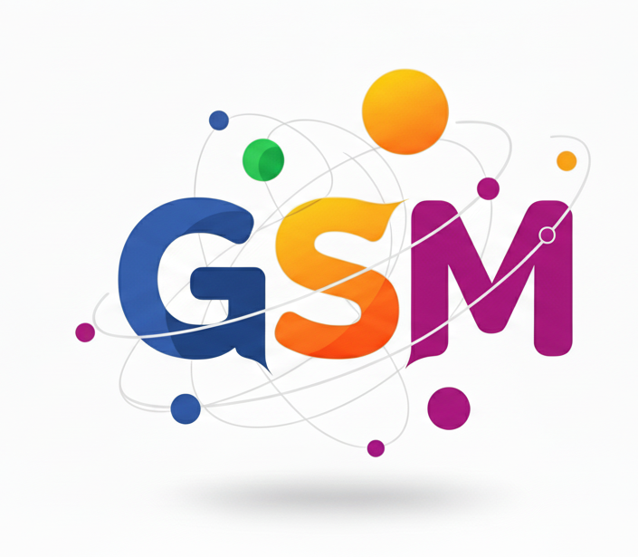
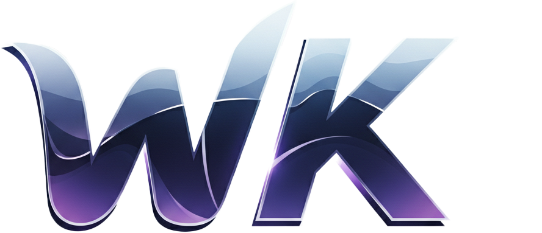

🚀 Willkommen im kollaborativen Lernsystem
Teil 1: Kennenlernen der Plattform
Lernziel: In diesem Arbeitsblatt lernt ihr unser digitales Kollaborationssystem kennen und wendet es praktisch am Beispiel des Themas "Soziale Medien im Schulalltag: Chancen und Risiken einer vernetzten Generation" an.
Was ist unser Lernsystem?
Unser Lernsystem ist eine Plattform, die speziell für die Zusammenarbeit in Lerngruppen entwickelt wurde. Es ermöglicht euch:
📝
Gemeinsam schreiben
Gleichzeitig an Texten arbeiten und Ideen entwickeln
🎨
Visualisieren
Mindmaps, Diagramme und Skizzen erstellen
🤖
KI-Unterstützung
Hilfe bei Recherche, Formulierungen und Strukturierung
📊
Organisieren
Dateien teilen, Fortschritte verfolgen, Ergebnisse exportieren
Erste Schritte - Eure Lerngruppe
Schritt 1: Meldet euch an der Plattform an (falls noch nicht geschehen)
Schritt 2: Tretet der Gruppe bei, die euer Lehrer erstellt hat (Gruppen-Code wird bekanntgegeben)
Schritt 3: Verschafft euch einen Überblick über den Gruppenbereich
💡 Tipp: Schaut euch zunächst 5 Minuten gemeinsam um. Wo findet ihr was? Welche Funktionen gibt es? Macht euch Notizen!
Die wichtigsten Funktionen im Überblick
| Funktion |
Wofür nutzen? |
Besonderheit |
| Dokumente |
Gemeinsam Texte schreiben, bearbeiten |
Live-Bearbeitung - ihr seht die Änderungen der anderen sofort |
| Whiteboards |
Brainstorming, Mindmaps, Diagramme |
KI kann Bilder generieren, Upload eigener Bilder möglich |
| Dateien |
Bilder, PDFs, andere Materialien teilen |
Alle haben Zugriff auf geteilte Materialien |
| KI-Chat |
Fragen stellen, Hilfe bei Formulierungen |
Kann Texte direkt bearbeiten und verbessern |
📱 Soziale Medien im Schulalltag
Teil 2: Euer Projektthema
Soziale Medien prägen den Schulalltag - aber wie?
Das Thema: "Soziale Medien im Schulalltag - Chancen und Risiken einer vernetzten Generation"
Soziale Medien sind aus dem Leben von Jugendlichen nicht mehr wegzudenken. Instagram, TikTok, Snapchat, Discord und andere Plattformen prägen den Alltag - auch in der Schule. Doch wie wirken sich diese digitalen Welten tatsächlich auf Lernen, soziale Beziehungen und die Persönlichkeitsentwicklung aus?
Eure Aufgabe
🎯 Hauptauftrag:
Erstellt gemeinsam eine fundierte Analyse zum Einfluss sozialer Medien auf den Schulalltag. Das Ergebnis soll eine multimediale Präsentation werden, die verschiedene Perspektiven beleuchtet und konkrete Handlungsempfehlungen enthält.
Teilaufgaben - So geht ihr vor:
Phase 1: Orientierung & Planung (1 Stunde)
- Brainstorming: Was fällt euch zum Thema ein?
- Erste Unterthemen sammeln
- Arbeitsaufteilung besprechen
Phase 2: Recherche & Materialsammlung (2 Stunden)
- Wissenschaftliche Quellen finden
- Statistiken und Studien recherchieren
- Eigene Umfrage in der Schule durchführen
Phase 3: Analyse & Bewertung (2 Stunden)
- Positive und negative Aspekte herausarbeiten
- Verschiedene Perspektiven einbeziehen
- Eigene Erfahrungen reflektieren
Phase 4: Lösungsansätze entwickeln (1 Stunde)
- Konkrete Handlungsempfehlungen formulieren
- Für Schüler, Lehrer und Eltern
- Realistische Umsetzungsmöglichkeiten
Phase 5: Präsentation erstellen (2 Stunden)
- Ergebnisse strukturieren und visualisieren
- Multimediale Elemente einbauen
- Gemeinsame Präsentation vorbereiten
Mögliche Unterthemen zur Vertiefung
🧠
Lernen & Konzentration
Ablenkung vs. neue Lernmöglichkeiten
👥
Soziale Beziehungen
Online-Freundschaften, Cybermobbing, FOMO
🎭
Selbstbild & Identität
Selbstdarstellung, Vergleiche, Selbstwert
⏰
Zeitmanagement
Zeitverschwendung vs. Effizienz
🔒
Datenschutz & Privatsphäre
Persönliche Daten, digitale Spuren
💰
Kommerzialisierung
Werbung, Influencer, Konsumverhalten
🛠️ So arbeitet ihr mit dem System
Teil 3: Praktische Anleitung
Erste Schritte in eurer Gruppe
⚠️ Wichtig: Arbeitet von Anfang an strukturiert! Plant gemeinsam, wer wann was macht, und haltet euch an Absprachen.
🗺️ Schritt-für-Schritt: Euer erstes Brainstorming
1. Whiteboard erstellen
• Geht in euren Gruppenbereich
• Klickt auf "Neues Whiteboard"
• Titel: "Brainstorming - Soziale Medien"
2. Gemeinsam Ideen sammeln
• Jeder schreibt 5 Minuten eigene Gedanken auf (Text-Tool)
• Nutzt verschiedene Farben für verschiedene Kategorien
• Zeichnet Verbindungen zwischen verwandten Ideen
3. KI um Hilfe bitten
• Öffnet den KI-Chat im Whiteboard
• Fragt z.B.: "Welche wichtigen Aspekte von sozialen Medien in der Schule könnten wir noch übersehen haben?"
• Ergänzt neue Ideen auf dem Whiteboard
4. Struktur entwickeln
• Gruppiert ähnliche Ideen
• Erstellt Oberkategorien
• Priorisiert: Was ist besonders wichtig?
📝 Gemeinsam schreiben - Euer erstes Dokument
Ziel: Erstellt ein gemeinsames Dokument "Projektplanung", in dem ihr eure Arbeitsaufteilung und Zeitplanung festhaltet.
- Neues Dokument erstellen: "Projektplanung - Soziale Medien"
- Gemeinsam eine Gliederung entwickeln
- Aufgaben auf Teammitglieder verteilen
- Deadlines festlegen
- Kontaktdaten und Verfügbarkeiten notieren
💡 Profi-Tipp: Nutzt die Live-Bearbeitung! Ihr könnt gleichzeitig schreiben und seht sofort, was die anderen machen. Bei Unklarheiten nutzt den Chat oder sprecht direkt miteinander.
🤖 Die KI richtig nutzen
| Situation |
Gute KI-Frage |
Weniger hilfreiche Frage |
| Recherche-Start |
"Welche wissenschaftlichen Studien gibt es zum Einfluss von Instagram auf die Konzentration bei Jugendlichen?" |
"Sind soziale Medien schlecht?" |
| Text verbessern |
"!Verbessere diesen Absatz stilistisch und mache die Argumentation klarer" |
"Schreib das für mich" |
| Strukturierung |
"Hilf mir, eine logische Gliederung für das Thema Cybermobbing zu erstellen" |
"Mach eine Gliederung" |
KI-Regel: Die KI ist euer Assistent, nicht euer Ersatz! Sie hilft beim Denken, Formulieren und Strukturieren - die Ideen und kritischen Gedanken müssen von euch kommen.
📋 Konkrete Arbeitsaufträge
Teil 4: Jetzt seid ihr dran!
Arbeitsauftrag 1: Orientierung (15 Minuten)
Was sollt ihr tun:
- Loggt euch alle in das System ein
- Tretet der Gruppe bei (Code vom Lehrer)
- Erkundet 10 Minuten gemeinsam die Oberfläche
- Erstellt ein erstes Test-Dokument: "Unser Eindruck vom System"
- Jeder schreibt 2-3 Sätze über den ersten Eindruck hinein
Arbeitsauftrag 2: Thema erschließen (30 Minuten)
Brainstorming-Session:
- Erstellt ein Whiteboard "Unser Brainstorming"
- Sammelt 15 Minuten Ideen zum Thema "Soziale Medien in der Schule"
- Jeder denkt an eigene Erfahrungen: Was ist positiv? Was problematisch?
- Nutzt die KI: Fragt sie nach weiteren wichtigen Aspekten
- Ordnet eure Ideen in Kategorien (z.B. "Vorteile", "Nachteile", "Lösungsansätze")
Arbeitsauftrag 3: Projektplanung (30 Minuten)
Dokumentiert euer Vorgehen:
- Erstellt das Dokument "Unser Projektplan"
- Legt fest, welche Unterthemen ihr bearbeiten wollt
- Teilt die Arbeit auf: Wer macht was bis wann?
- Plant konkrete Arbeitsschritte für die nächsten Wochen
- Notiert wichtige Fragen, die ihr klären müsst
Arbeitsauftrag 4: Erste Recherche (45 Minuten)
Materialsammlung beginnen:
- Jeder übernimmt einen Recherche-Bereich
- Erstellt gemeinsam das Dokument "Unsere Quellen und Materialien"
- Sammelt erste seriöse Quellen (Studien, Artikel, Statistiken)
- Nutzt die KI für Recherche-Tipps und Quellen-Vorschläge
- Ladet relevante Dateien in den Gruppenbereich hoch
- Notiert erste wichtige Erkenntnisse
🎯 Ziel der ersten Arbeitseinheit: Am Ende solltet ihr das System kennen, eine klare Vorstellung von eurem Projekt haben und wisssen, wie ihr die nächsten Schritte angeht.
Reflexionsfragen für zwischendurch
💭 Macht euch Gedanken zu:
- Wie unterscheidet sich die Arbeit mit diesem System von normaler Gruppenarbeit?
- Welche Vorteile seht ihr beim gemeinsamen digitalen Arbeiten?
- Was ist gewöhnungsbedürftig oder schwierig?
- Wie hilft euch die KI konkret bei eurer Arbeit?
- Wie organisiert ihr euch, damit alle gleichberechtigt mitarbeiten können?
Ausblick: Die nächsten Schritte
In den folgenden Wochen werdet ihr:
- Eure Recherche vertiefen und strukturieren
- Eine eigene Umfrage in der Schule durchführen
- Verschiedene Perspektiven (Schüler, Lehrer, Eltern) einbeziehen
- Konkrete Handlungsempfehlungen entwickeln
- Eine multimediale Präsentation erstellen
- Eure Ergebnisse der Klasse und eventuell der Schulgemeinschaft vorstellen
📚 Bewertungskriterien:
Bewertet werden sowohl der Arbeitsprozess (Zusammenarbeit, Nutzung der Tools, Dokumentation) als auch das Endergebnis (Qualität der Analyse, Originalität der Lösungsansätze, Präsentation).
📖 Anhang
Hilfen und Tipps
🆘 Häufige Probleme und Lösungen
| Problem |
Lösung |
| Jemand kann nicht beitreten |
Gruppen-Code prüfen, eventuell neu eingeben. Bei weiterhin Problemen: Lehrer informieren |
| Änderungen werden nicht angezeigt |
Seite neu laden (F5). Internet-Verbindung prüfen |
| KI antwortet nicht |
Frage präziser formulieren. Bei technischen Problemen: kurz warten und erneut versuchen |
| Datei lässt sich nicht hochladen |
Dateigröße prüfen (max. 10MB). Unterstützte Formate: jpg, png, pdf, docx |
💡 Tipps für erfolgreiche Gruppenarbeit
- Kommunikation: Sprecht regelmäßig miteinander, auch außerhalb der Plattform
- Fairness: Achtet darauf, dass alle gleichberechtigt beitragen können
- Struktur: Haltet eure Dokumente und Dateien organisiert
- Backup: Exportiert wichtige Dokumente regelmäßig als PDF
- Zeitmanagement: Plant realistische Deadlines und haltet sie ein
- Qualität: Überprüft eure Quellen und Argumente kritisch
📚 Weiterführende Ressourcen
Für eure Recherche empfehlenswert:
- Bundeszentrale für politische Bildung (bpb.de) - Artikel zu Digitalisierung
- Klicksafe.de - Sicherheit im Internet
- JIM-Studie (Jugend, Information, Medien) - aktuelle Zahlen zu Mediennutzung
- Schau hin! (schau-hin.info) - Medienerziehung
- Wissenschaftliche Datenbanken über eure Schulbibliothek
🎯 Denkt daran: Das Ziel ist nicht nur ein gutes Projektergebnis, sondern auch zu lernen, wie digitale Zusammenarbeit funktioniert. Diese Fähigkeiten werdet ihr in Studium und Beruf immer wieder brauchen!
Viel Erfolg bei eurem Projekt!
Bei Fragen wendet euch jederzeit an euren Lehrer.

Erstellt mit dem kollaborativen Lernsystem